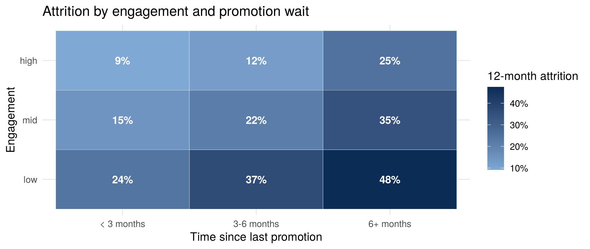

Unique employee per snapshot; valid grades; engagement within 1–5; pay > 0; headcount reconciles to payroll
Govern
Metrics: headcount, attrition rate, regretted attrition, compa-ratio, engagement index. Vector index over exit-interview text
Serve
HRBP dashboard (Shiny, with row-level security by department); Dataverse for HR Power Apps; aggregate-only views for executives
Plane
Pay and performance are confidential; names and IDs are personal. DPIA for any predictive model about people
17.3 Run the pipeline
🧠 Prompt 17.1 — HR pipeline
Build an HR pipeline with the kit’s run_pipeline(): bronze from hr_attrition.csv; silver.employees typed, with exit_interview_booked excluded because it leaks the outcome; gold.fct_employee with a compa-ratio (pay ÷ median pay for the grade), an engagement band and a promotion-wait band; and a department mart. Tests: unique employee_id, engagement 1–5, pay > 0, accepted grades and work patterns. Publish the mart to a serving SQLite file.
spec <-list(name ="hr",bronze =list(hr_attrition ="hr_attrition.csv"),silver =list(employees =" SELECT employee_id, department, grade, CAST(annual_pay_ngn AS DOUBLE) AS annual_pay_ngn, CAST(tenure_years AS DOUBLE) AS tenure_years, CAST(commute_minutes AS DOUBLE) AS commute_minutes, CAST(engagement_score AS DOUBLE) AS engagement_score, CAST(months_since_promotion AS DOUBLE) AS months_since_promotion, CAST(training_hours_12m AS DOUBLE) AS training_hours_12m, CAST(manager_span AS INTEGER) AS manager_span, work_pattern, CAST(left_within_12m AS INTEGER) AS left_within_12m -- exit_interview_booked deliberately excluded: it is recorded after resignation (target leakage) FROM bronze.hr_attrition"),gold =list(fct_employee =" SELECT *, annual_pay_ngn / median(annual_pay_ngn) OVER (PARTITION BY grade) AS compa_ratio, CASE WHEN engagement_score < 3 THEN 'low' WHEN engagement_score < 4 THEN 'mid' ELSE 'high' END AS engagement_band, CASE WHEN months_since_promotion >= 6 THEN '6+ months' WHEN months_since_promotion >= 3 THEN '3-6 months' ELSE '< 3 months' END AS promo_wait_band FROM silver.employees",mart_department =" SELECT department, COUNT(*) AS headcount, AVG(left_within_12m) AS attrition_rate, AVG(engagement_score) AS engagement, median(annual_pay_ngn) AS median_pay, AVG(manager_span) AS avg_span FROM gold.fct_employee GROUP BY 1"),tests =list(t_unique("gold.fct_employee", "employee_id"),t_range("gold.fct_employee", "engagement_score", 1, 5),t_range("gold.fct_employee", "annual_pay_ngn", 1),t_accepted("gold.fct_employee", "work_pattern", c("Onsite", "Hybrid", "Remote")),t_accepted("gold.fct_employee", "grade", c("Analyst", "Senior Analyst", "Manager", "Senior Manager", "Director")),t_rowcount("gold.fct_employee", 1000)),publish =c("gold.mart_department"))hr <-run_pipeline(spec)show_tests(hr$tests); cat("Published:", hr$published)
status
severity
test
failing_rows
PASS
error
unique(gold.fct_employee: employee_id)
0
PASS
error
range(gold.fct_employee.engagement_score in [1, 5])
0
PASS
error
range(gold.fct_employee.annual_pay_ngn in [1, Inf])
0
PASS
error
accepted_values(gold.fct_employee.work_pattern)
0
PASS
error
accepted_values(gold.fct_employee.grade)
0
PASS
error
row_count(gold.fct_employee ≥ 1,000)
0
Published: TRUE
17.4 Insight: what drives attrition?
d <-dbGetQuery(hr$con, "SELECT engagement_band, promo_wait_band, AVG(left_within_12m) attrition, COUNT(*) n FROM gold.fct_employee GROUP BY ALL")d$engagement_band <-factor(d$engagement_band, c("low", "mid", "high"))d$promo_wait_band <-factor(d$promo_wait_band, c("< 3 months", "3-6 months", "6+ months"))ggplot(d, aes(promo_wait_band, engagement_band, fill = attrition)) +geom_tile(colour ="white") +geom_text(aes(label = scales::percent(attrition, 1)), colour ="white", fontface ="bold") +scale_fill_gradient(low ="#7FA8D4", high ="#0B2C55", labels = scales::percent) +labs(x ="Time since last promotion", y ="Engagement", fill ="12-month attrition",title ="Attrition by engagement and promotion wait")

17.4.1 The leakage lesson, in numbers
🧠 Prompt 17.2 — prove the leakage
Fit two logistic regressions for left_within_12m: one with exit_interview_booked (from bronze), one without (from gold). Compare their AUC on a 30% hold-out. Explain to an HR director why the “better” model is useless.
auc <-function(y, p) { r <-rank(p); n1 <-sum(y); (sum(r[y ==1]) - n1 * (n1 +1) /2) / (n1 * (length(y) - n1)) }full <-dbGetQuery(hr$con, "SELECT g.*, CAST(b.exit_interview_booked AS INTEGER) AS exit_interview_booked FROM gold.fct_employee g JOIN bronze.hr_attrition b USING (employee_id)")set.seed(7); test <-sample(nrow(full), .3*nrow(full))f_honest <- left_within_12m ~ engagement_score + months_since_promotion + compa_ratio + tenure_years + commute_minutes + training_hours_12m + work_patternf_leaky <-update(f_honest, . ~ . + exit_interview_booked)m1 <-glm(f_honest, binomial, full[-test, ]); m2 <-suppressWarnings(glm(f_leaky, binomial, full[-test, ]))data.frame(model =c("honest (no leakage)", "with exit_interview_booked"),hold_out_AUC =round(c(auc(full$left_within_12m[test], predict(m1, full[test, ])),auc(full$left_within_12m[test], predict(m2, full[test, ]))), 3))
model
hold_out_AUC
honest (no leakage)
0.731
with exit_interview_booked
0.968
The leaky model scores almost perfectly, because it is told who has already resigned. The honest model is the one that can warn a manager before the resignation. Its top drivers (engagement, promotion wait, pay position) are things a manager can act on.
Owner: the CHRO owns the definitions; the HR analytics lead owns the pipeline.
First 90 days: a monthly attrition and headcount pack that reconciles to payroll; then a flight-risk list for HRBPs, with reasons, not just scores.
Privacy: individual risk scores are personal data about employees. You need a DPIA, a clear lawful basis, access limited to the employee’s own HRBP and manager, and no automated decisions. The model prompts a conversation, never a dismissal.
Fairness: do not use protected characteristics as model inputs. Check outcomes across groups where lawful.
Pitfall: the HRIS records reasons for leaving after the fact. Keep them for reporting, never as model features.
17.7 🏋️ Exercises
E17.1 🟢 Which department has the highest attrition, and what is its median pay relative to the company? E17.2 🟡 Add a test that fails if any grade’s compa-ratio spread (max ÷ min) exceeds 3. Investigate any failure: data error or pay-equity issue? E17.3 🔴 Build a “manager pack”: for each department, the five employees with the highest honest-model risk, their top driver, and a suggested action. What access controls must this output have?